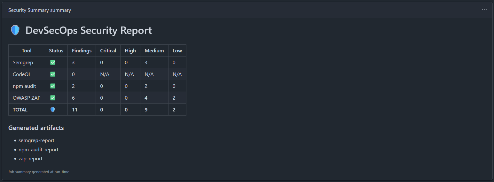
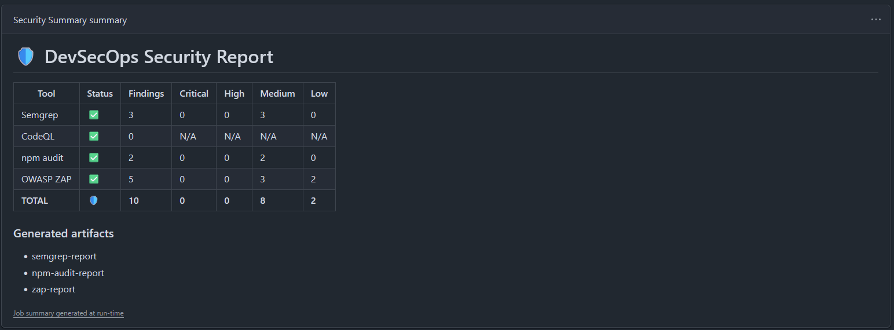

PASO 2 — Endurecimiento y Parcheo
Mitigación de Vulnerabilidades y Endurecimiento del Entorno
Aplicación de contramedidas técnicas para solventar los fallos dinámicos y estáticos encontrados, separando las configuraciones de desarrollo y producción para no interrumpir el desarrollo local.
🎯 Estrategia de Mitigación Seleccionada
De las 11 alertas reportadas en el escaneo inicial, se priorizó la corrección de **5 advertencias críticas** que impactan directamente el endurecimiento de la aplicación, clasificando el resto (directivas de caché o informativas) como aceptables dentro del análisis de riesgo del TFG:
- X-Frame-Options (Protección contra secuestro de clics / Clickjacking)
- X-Content-Type-Options (Protección contra sniffing de tipo MIME)
- Content-Security-Policy (Defensa moderna contra inyecciones XSS)
- Permissions-Policy (Limitación del uso de APIs intrusivas de hardware)
- Subresource Integrity (Verificación de firma de tramas en CDNs externos)
🛡️ Corrección 1: Cabeceras de Seguridad en Next.js
Vercel y el servidor Node de Next.js permiten inyectar directivas de cabeceras HTTP en todas las respuestas del servidor mediante el método headers() declarado en next.config.js:
/** @type {import('next').NextConfig} */
const nextConfig = {
async headers() {
return [
{
source: "/(.*)",
headers: [
{ key: "X-Frame-Options", value: "DENY" },
{ key: "X-Content-Type-Options", value: "nosniff" },
{ key: "Permissions-Policy", value: "geolocation=(), microphone=(), camera=()" },
{ key: "Content-Security-Policy", value: "default-src 'self'; img-src 'self' https:; script-src 'self'; style-src 'self' 'unsafe-inline';" }
]
}
];
}
};
module.exports = nextConfig;Estado de Alertas tras la Corrección 1
| Alerta Reportada | Estado |
|---|---|
| Missing Anti-clickjacking Header | ✔ Corregido (DENY) |
| X-Content-Type-Options Missing | ✔ Corregido (nosniff) |
| Permissions-Policy Missing | ✔ Corregido (Hardware acotado) |
| CSP Not Set | ✔ Corregido (CSP Básica) |
📦 Corrección 2: Integridad del Subrecurso (SRI)
Para recursos que deben cargarse desde CDNs de terceros lícitos, se documentó el método de verificación utilizando firmas criptográficas.
Ejemplo de Firma de Google Fonts en _document.tsx
<link
rel="stylesheet"
href="https://fonts.googleapis.com/css2?family=Permanent+Marker&family=Roboto+Mono:wght@400;700&display=swap"
integrity="sha384-xxxxxxxxxxxxxxxxxxxxxxxxxxxxxxxxxxxxxxxxxxxxxxxxxxxxxxxx"
crossOrigin="anonymous"
/>El hash exacto se genera desde el CLI local consultando el enlace directo del CDN:
npx sri-tool https://fonts.googleapis.com/css2?family=Permanent+Marker&family=Roboto+Mono:wght@400;700&display=swapParche Definitivo Aplicado en el TFG
En lugar de depender de CDNs externos (que obligan a abrir conexiones externas en la directiva font-src de la CSP), se descargaron las fuentes locales (Roboto Mono, Permanent Marker, Patrick Hand), almacenándose en /public/assets/fonts/ e importándose en globals.css mediante reglas @font-face locales, eliminando del todo el warning.
🧱 Corrección 3: Fallo de Compilación Local y Pantalla en Blanco
Al trasladar las directivas CSP de producción a local, el servidor de desarrollo arrojaba múltiples errores lógicos bloqueando la carga.
Causa Raíz: Next.js utiliza funciones de inyección y evaluación en caliente (eval()) para la recarga rápida (HMR). Deshabilitar 'unsafe-eval' impedía la compilación en local. Asimismo, la cabecera estricta COEP bloqueaba la visualización de imágenes externas.
Solución: Lógica Condicional de Entornos
Se implementó una separación lógica en next.config.js mediante la detección de process.env.NODE_ENV:
- Modo Desarrollo: Permite
'unsafe-eval'y'unsafe-inline'en scripts para dar soporte a Hot Module Replacement, omitiendo cabeceras de origen cruzado estrictas. - Modo Producción: CSP ultra-estricta sin permisos de evaluación dinámica (
'unsafe-eval') y aplicación de aislamiento estricto de recursos.
⚡ Refinamiento de CSP y Mitigación de Nuevos Warnings en ZAP
En la segunda ejecución, ZAP arrojó avisos medios indicando el uso de comodines dinámicos (*.supabase.co) y falta de fallbacks alternativos de CSP:
Captura: Reporte indicando advertencias activas en CSP y Clickjacking inicial.
Parches de Seguridad Aplicados
- Falta de directivas de fallback: Se individualizó la declaración de cada una de las tramas de directivas de orígenes (
default-src,font-src, etc.) en producción. - Comodines Wildcard: Se restringieron las conexiones salientes retirando el asterisco comodín general de base de datos e inyectando las URIs exclusivas asignadas a la instancia de producción en Supabase:
https://awlgujnnrynrovthstbi.supabase.coywss://awlgujnnrynrovthstbi.supabase.co.
/** @type {import('next').NextConfig} */
const nextConfig = {
async headers() {
const isDev = process.env.NODE_ENV === "development";
return [
{
source: "/:path*",
headers: [
{
key: "X-Frame-Options",
value: "DENY"
},
{
key: "X-Content-Type-Options",
value: "nosniff"
},
{
key: "Permissions-Policy",
value: "geolocation=(), microphone=(), camera=()"
},
{
key: "Content-Security-Policy",
value: isDev
? `
default-src 'self';
img-src 'self' data: https:;
script-src 'self' 'unsafe-inline' 'unsafe-eval';
style-src 'self' 'unsafe-inline';
font-src 'self';
connect-src 'self' https://*.supabase.co wss://*.supabase.co;
`.replace(/\s+/g, " ")
: `
default-src 'self';
img-src 'self' data: https://asga.vercel.app;
script-src 'self';
style-src 'self' 'unsafe-inline';
font-src 'self';
connect-src 'self' https://awlgujnnrynrovthstbi.supabase.co wss://awlgujnnrynrovthstbi.supabase.co;
frame-ancestors 'none';
`.replace(/\s+/g, " ")
}
]
},
{
source: "/_next/static/:path*",
headers: [
{
key: "Cache-Control",
value: "public, max-age=31536000, immutable"
}
]
}
];
}
};
module.exports = nextConfig;Reporte de Segunda Ejecución

Captura: Disminución drástica de warnings tras aplicar la CSP inicial.
Reporte Final Mitigado

Captura: Consolidación final con los únicos avisos justificados inevitables.
Reporte Técnico Final Mitigado
Visualiza el archivo HTML original emitido por el escáner al cierre de las pruebas.
📌 Resumen de Mitigaciones y Justificaciones de Excepciones
| Alerta de Seguridad (ZAP) | Estado Final | Mecanismo / Justificación en la Memoria del TFG |
|---|---|---|
| CSP: Failure to Define Directive | ✔ Mitigado | Declaración explícita e individualizada de todos los orígenes de carga. |
| CSP: Wildcard Directive | ✔ Mitigado | Acotado a dominios y subdominios exactos del backend de Supabase. |
| CSP: style-src unsafe-inline | Aceptado (Excepción) | Requerido de forma nativa por Next.js para hidratar estilos inline e inyectar estilos críticos SSR en el cliente. |
| Cross-Domain Misconfiguration | Aceptado (Excepción) | Es un comportamiento esperado y legítimo derivado de la arquitectura desacoplada al conectarse a la API y WebSockets externos de Supabase. |